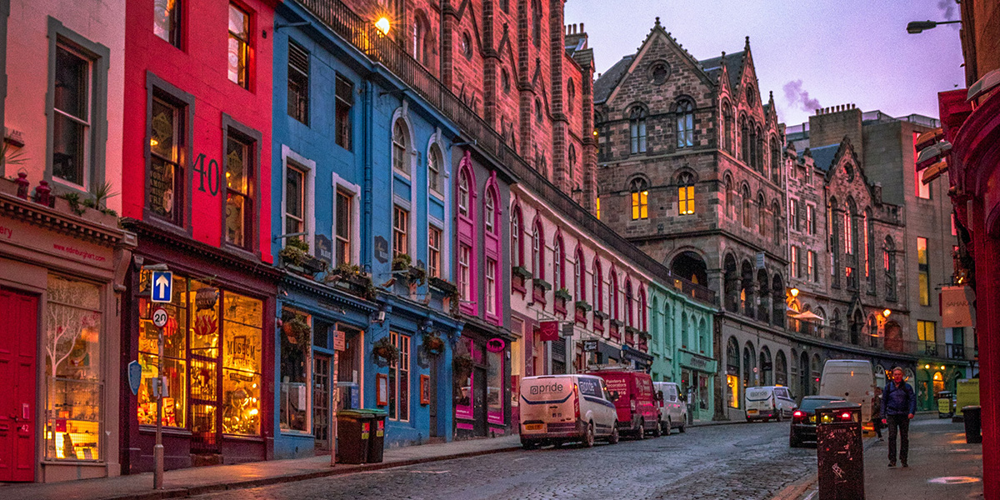

Edinburgh is Scotland's compact, hilly capital. It has a medieval Old Town and elegant Georgian New Town with gardens and neoclassical buildings. Looming over the city is Edinburgh Castle, home to Scotland’s crown jewels and the Stone of Destiny, used in the coronation of Scottish rulers. Arthur’s Seat is an imposing peak in Holyrood Park with sweeping views, and Calton Hill is topped with monuments and memorials.
 early edinburgh Website